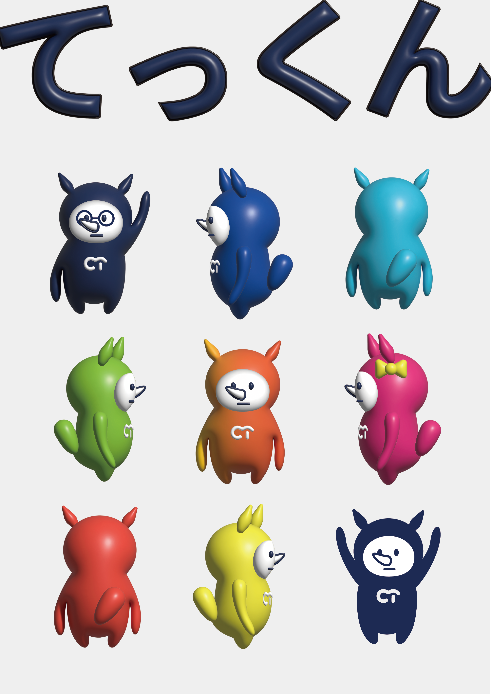
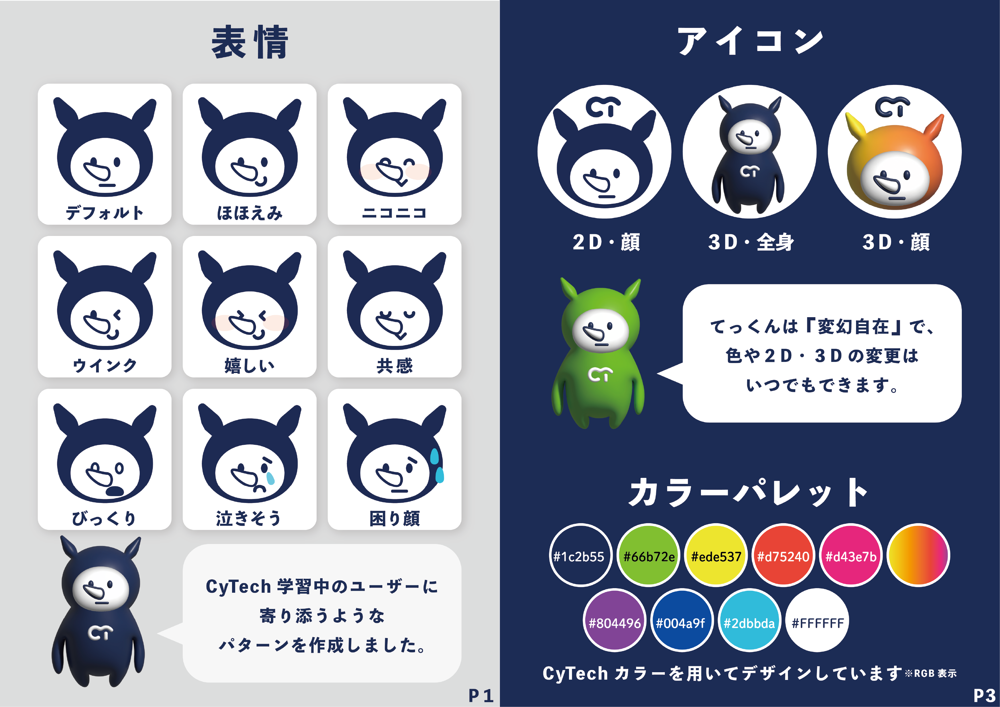
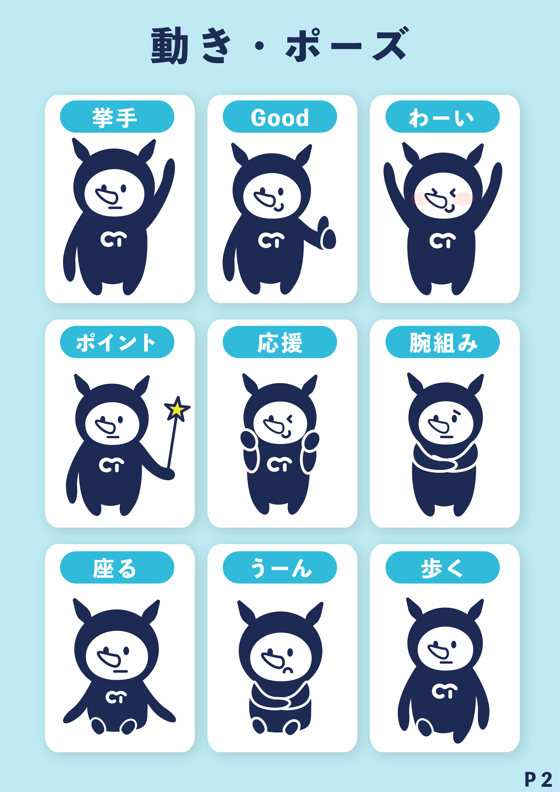

OVERVIEW
この作品は、プログラミング学習アプリ「CyTech（サイテック）」のデザインオーディションに向けて制作したモチーフキャラクターです。 10代〜30代の学習者が親しみを持ち、学習を続けたくなる“相棒感”を目的にデザインしました。 ※本キャラクターはCyTechの公式キャラクターではなく、オーディション提出用として制作したものです。
ROLE
- キャラクターコンセプト設計（ターゲット/印象/利用シーン整理）
- ラフ制作 → 形状・表情・シルエット検討
- 清書・仕上げ（配色/バランス調整）
- 提案資料（見せ方）構成
TECH STACK
POINTS
① こだわりポイント
プログラミング学習をサポートする“相棒”のようなキャラクターをコンセプトに制作しました。 学習のハードルを下げるため、親しみやすさと安心感を重視したデザインにしています。
② 工夫
ラフスケッチで複数パターンを検討し、シルエット・配色・印象を比較しながら調整しました。 「可愛さ」だけに寄せず、シルエットだけでも認識できるよう、形状のバランスや特徴的なパーツを意識して設計しました。 また、表情やフォルムを柔らかくすることで、学習アプリに合う親しみやすさを表現しています。最終的には視認性と親しみやすさのバランスを意識して仕上げています。
③ 苦労と解決
情報量を増やすと幼く見え、減らすと個性が弱くなる点が難しかったため、特徴は“角/耳/輪郭”に集約し、配色は見やすさ優先で整理しました。
SCREENSHOTS


